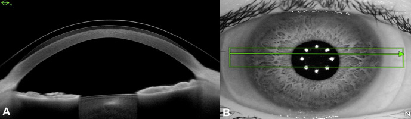
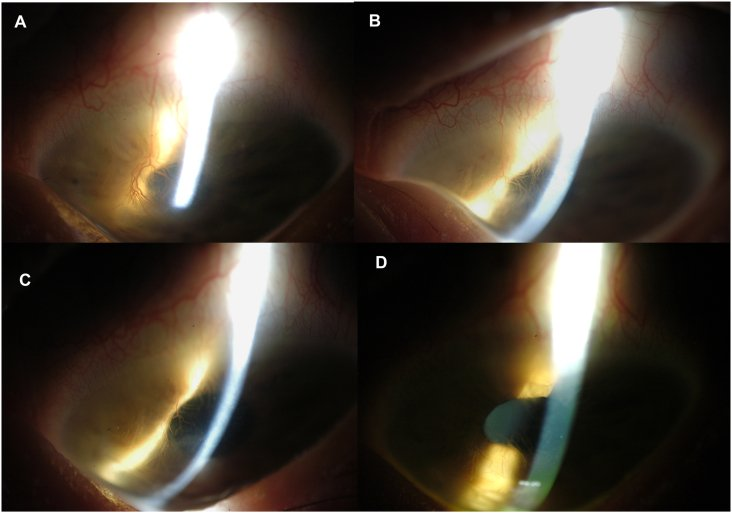
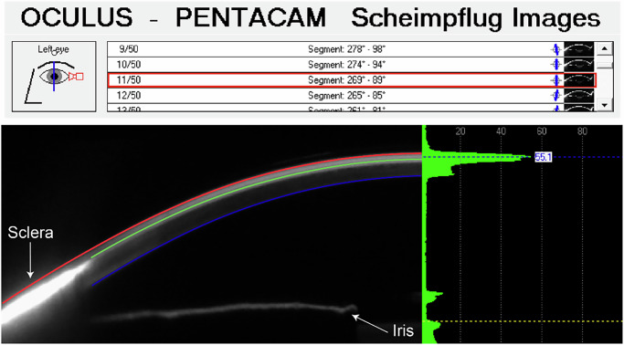

6131 — Kính scleral (scleral lens) trong bệnh bề mặt nhãn cầu nặng: chọn thông số, đo vault bằng AS-OCT, biến chứng và khi nào không nên đeo
Tags: pattern:khuyet-bieu-mo-giac-mac pattern:mo-giac-mac pattern:tan-mach-giac-mac pattern:loet-giac-mac vung:mat vung:giac-mac vung:cung-mac anatomy:bieu-mo-giac-mac score:OSDI protocol:AS-OCT protocol:Scheimpflug protocol:topography
Mức chắc chắn (certainty): tổng hợp y văn (literature synthesis) — ghép meta-analysis 22 nghiên cứu / 830 mắt về biến đổi giác mạc và nhãn áp khi đeo kính scleral (Ophthalmic Physiol Opt 2026, PMC13395828), nghiên cứu 12 mắt sau ghép giác mạc (Ophthalmic Physiol Opt 2026, PMC13396062), thử nghiệm tiền cứu 21 mắt bệnh bề mặt nhãn cầu khó trị (Sci Rep 2021, PMC7840975), hồi cứu 49 mắt / 34 bệnh nhân (Turk J Ophthalmol 2025, PMC12372548), 2 ca SJS/TEN (4 mắt) đeo PROSE (Am J Ophthalmol Case Rep 2022, PMC9027328) và thí điểm động học dịch ở kính có lỗ thông (Ophthalmic Physiol Opt 2026, PMC13395885). Không có ca do nhóm tự chụp.
Câu hỏi thực hành: nữ 19 tuổi, hội chứng Stevens–Johnson (SJS) sau sulfamethoxazole/trimethoprim 1 năm, đã dùng nước mắt nhân tạo, kháng sinh, kính mềm băng và màng ối, vẫn đau, nhìn dao động, loét giác mạc tái phát ở mắt trái. Câu hỏi: có nên đặt kính scleral không, đo gì để biết kính "vừa", và cái gì quyết định thành công hay thủng giác mạc? Bài chốt ba quyết định: (1) kính scleral là thiết bị duy nhất vừa che chở vừa không đè lên vùng rìa (limbus) — chỉ định khi bề mặt nhãn cầu không còn cách nào khác; (2) "vừa" không phải cảm giác mà là số đo vault 200–350 µm trên AS-OCT; (3) biến chứng chính là phù giác mạc do thiếu oxy và viêm giác mạc nhiễm khuẩn — kiểm soát bằng Dk/t, thời gian đeo và vệ sinh, không bằng "đeo ít đi một chút". Nối 6106 – Bệnh giác mạc do aniridia, 6104 – Aniridia bẩm sinh và hội chứng WAGR, 452 – Hoại tử võng mạc cấp ARN/CMV.
1. Tổng quan bệnh học – cơ chế hình ảnh: vì sao "một lớp nước" lại cứu được giác mạc
- Nguyên lý cơ học: kính scleral là kính cứng thấu khí (rigid gas-permeable) đường kính lớn 15–18 mm, tựa hoàn toàn trên cùng mạc (sclera) và vượt qua (vault) giác mạc, tạo một bể dịch (fluid reservoir) giữa mặt sau kính và biểu mô giác mạc. Khác kính tiếp xúc thường, không có điểm tì trên giác mạc và không tì lên vùng rìa — đây là lý do nó dùng được khi vùng rìa đã mất tế bào gốc.
- TẠI SAO bể dịch chữa được bề mặt nhãn cầu: bể dịch liên tục cấp nước cho biểu mô, rửa trôi cytokine viêm và protease trong nước mắt, che chắn khỏi mi mắt và lông xiêu, và tạo mặt quang học mới che các bất thường bề mặt. Ba tác dụng này giải thích vì sao cùng một kính vừa giảm đau, vừa liền biểu mô, vừa tăng thị lực — không phải ba cơ chế riêng.
- TẠI SAO vẫn có thể gây hại: oxy tới giác mạc chỉ còn đường khuếch tán qua vật liệu kính và bể dịch. Độ thấu khí được biểu diễn bằng Dk/t (Dk = hệ số khuếch tán × độ hòa tan oxy; t = bề dày). Trong 22 nghiên cứu của meta-analysis, Dk/t dao động 85 đến > 160 (ISO/Fatt) và bề dày trung tâm thực tế dùng trong nghiên cứu sau ghép là ≈ 250 µm với Dk 100 (PMC13395828, PMC13396062). Thiếu oxy → phù giác mạc (tăng bề dày) → giảm thị lực, tăng nguy cơ nhiễm khuẩn.
- Con số "an toàn" của đeo kính hiện đại: gộp 190 mắt trong 7 nghiên cứu, bề dày giác mạc trung tâm (CCT) tăng 7,93 µm (95% CI 4,92–10,95) khi đang đeo; sau tháo kính chênh 1,49 µm (95% CI −1,59 đến 4,56; p = 0,34) — tức hồi phục hoàn toàn. Phù nhu mô gộp 0,88% (95% CI 0,67–1,10) (PMC13395828). Đây là ngưỡng để phân biệt "đeo kính bình thường" với "quá tải oxy".
- Ngược lại, giác mạc đã mỏng/yếu thì con số đổi hẳn: 12 mắt sau ghép (PK/DALK) đeo kính 8 giờ, CCT 485,3 ± 47,1 → 520,4 ± 51,3 µm, tức phù 7,2 ± 3,1%; PK 11,38% so với DALK 5,23% (p = 0,003), và mức phù tương quan với tuổi mảnh ghép (r = 0,80) chứ không với mật độ tế bào nội mô trước đeo (PMC13396062). Bài học: nội mô là "trần" của đeo kính scleral — mắt ghép cũ, mắt sau herpes nội mô, mắt có ECD thấp phải đo bề dày trước và sau mỗi lần tăng giờ đeo.
- Nhãn áp có tăng không? Lo ngại kinh điển là kính đè lên cùng mạc làm cản lưu thông dịch. Gộp 830 mắt, nhãn áp sau tháo kính chênh 0,38 mmHg (95% CI −0,30 đến 1,05; p = 0,27); ở giác mạc lành đo trong ngày 0,91 mmHg (95% CI −0,29 đến 2,11; p = 0,14) — không có ý nghĩa (PMC13395828). Cẩn trọng: đo nhãn áp khi đang đeo kính là sai (kính cản đầu đo), phải tháo kính rồi đo.
- Vì sao phải đo bằng hình ảnh chứ không nhìn bằng mắt: bể dịch chỉ dày 200–400 µm — mắt người không phân biệt được 100 µm. Trong 49 mắt hồi cứu, vault đo bằng AS-OCT là 0,21 ± 0,02 mm (150–260 µm) ở 23 mắt / 17 bệnh nhân; tác giả khuyến cáo 300–350 µm cho nón giác mạc trung bình và mắt sau mổ, và 200–250 µm là mức trung bình dùng trong thực hành; trên đèn khe, ước lượng "lớp huỳnh quang dày bằng nửa bề dày giác mạc" (PMC12372548). Đây là ngưỡng định lượng thay cho cảm giác "kính vừa".
- Hiệu quả lâm sàng có số: thử nghiệm tiền cứu 21 mắt bệnh bề mặt nhãn cầu khó trị (47,6% khuyết biểu mô dai dẳng, 28,6% GVHD, 19,0% SJS) đeo 12 tuần: thị lực có kính 0,77 → 0,27 logMAR (p < 0,001), tỷ lệ bắt màu fluorescein độ nặng ở giác mạc 61,9% → 14,3% và kết mạc 52,4% → 9,5%, OSDI 67,89 → 34,69, NEI-VFQ-25 51,40 → 64,48, không có biến chứng (PMC7840975). Hồi cứu 49 mắt: thị lực 0,67 → 0,13 logMAR, đeo 9,3 ± 4,5 giờ/ngày, thử 3,7 ± 1,9 lần mới vừa (PMC12372548).
- Ca SJS/TEN cho thấy điều kính mềm không làm được: 4 mắt của 2 bệnh nhân đeo PROSE (thiết kế kênh mặt sau — back-surface channeled haptics), tân mạch giác mạc thoái triển về độ 0 và mờ giác mạc từ độ 1 về 0 sau 8 tháng, thị lực 20/20 và 20/15, không cần steroid tại chỗ (PMC9027328). Tân mạch thoái triển được vì bể dịch cắt kích thích thiếu oxy – viêm – cọ xát — ba yếu tố nuôi dưỡng tân mạch.
2. Mẫu hình + chẩn đoán phân biệt theo vị trí và mục tiêu đeo kính (Gamut)
- Gamut theo mục tiêu (quyết định trước khi nghĩ tới thông số):
- Mục tiêu quang học: bất thường bề mặt gây loạn thị không đều — nón giác mạc (keratoconus), sau ghép xuyên (PK), sau LASIK/ectasia, sẹo giác mạc, loạn thị sau chấn thương.
- Mục tiêu bảo vệ – nuôi dưỡng: khuyết biểu mô dai dẳng (PED), bệnh mắt hột/Stevens–Johnson, GVHD, bỏng hóa chất, bệnh khô nặng, giác mạc thần kinh (neurotrophic).
- Mục tiêu "cứu giác mạc" thay mổ: dọa thủng (descemetocele), sau vá thủng, mắt chỉ còn một mắt — kính giữ vai trò cầu nối trước ghép hoặc thay ghép khi ghép quá nguy hiểm.
- Gamut theo vị trí tổn thương:
- Trung tâm giác mạc (2–4 mm trung tâm): loét, sẹo, mờ, tân mạch — can thiệp chính là bể dịch trung tâm; đây là nơi vault phải đo chính xác nhất.
- Vùng rìa (limbus, 1–2 mm ngoài): tế bào gốc — kính scleral không tì nên dùng được khi kính thường chống chỉ định; nhưng nếu vòng tựa (landing zone) đè lên rìa thì chính kính gây LSCD.
- Cùng mạc (sclera): nơi tựa của kính — cùng mạc dày, ít mạch; bệnh cùng mạc (viêm củng mạc, sau mổ) làm tựa không đều, dễ xoay lệch.
- Kết mạc và mi mắt: lông xiêu, sẹo mi, hở mi — vừa là nguyên nhân bệnh bề mặt, vừa là yếu tố cản đeo kính.
- Bảng "ai cần kính scleral" theo mẫu hình bề mặt:
| Mẫu hình bề mặt | Đặc điểm định lượng | Kính scleral giải quyết gì | Điều không giải quyết được |
|---|---|---|---|
| Loạn thị không đều (nón giác mạc) | Kmax thường > 50 D, loạn thị giác mạc > 3 D | Tạo mặt cầu mới, thị lực 0,67 → 0,13 logMAR | Không ngăn tiến triển nón — vẫn cần CXL |
| Khuyết biểu mô dai dẳng | Bắt màu fluorescein > 2 tuần, không liền dù băng kín | Che chở + cấp ẩm, giảm bắt màu 61,9% → 14,3% | Không xử lý nguyên nhân (mi, thần kinh, độc chất) |
| SJS/TEN mạn | Tân mạch, mờ, dính mi – kết mạc, khô nặng | Thoái triển tân mạch, làm trong giác mạc trong 8 tháng | Không phá dính mi – kết mạc, không tái tạo tế bào gốc |
| Sau ghép giác mạc | CCT 485 µm, mảnh ghép 7 tuổi | Che chở mảnh ghép, cải thiện thị lực | Không cứu được nội mô yếu — phù 11,4% sau 8 giờ |
| Dọa thủng / sau vá thủng | Mỏng < 100 µm, descemetocele | "Cầu nối" giữ nhãn cầu | Không thay thế mô — thủng vẫn phải vá |
3. Bảng so sánh phân biệt (ma trận đối chiếu)
| Thực thể / lựa chọn | Hình ảnh – lâm sàng điển hình | Chốt vào (rule-in) | Chốt loại (rule-out) | Gợi ý xác nhận |
|---|---|---|---|---|
| Kính scleral (đúng chỉ định, vừa) | AS-OCT: vault 200–350 µm, không tì giác mạc/rìa; đèn khe: lớp huỳnh quang đều, không có điểm tì | Bệnh bề mặt nhãn cầu nặng + AS-OCT vault trong khoảng + hết đau, biểu mô liền trong 2–4 tuần | Vault > 400 µm (bể quá dày, thiếu oxy) hoặc < 100 µm (tì) → không phải kính vừa | AS-OCT lát cắt qua đỉnh nón + đèn khe sau 30 phút |
| Kính mềm băng (bandage soft lens) | Che chở tạm, không tạo mặt quang học mới; thấm dịch | Loét nhỏ, cần che tạm vài ngày, bề mặt còn tương đối đều | Loạn thị không đều lớn, khô nặng, SJS — không đủ che chở | Thử 1–2 tuần; nếu vẫn đau/bắt màu → chuyển scleral |
| Kính cứng RGP thường | Tựa trên giác mạc, tì lên đỉnh nón, dễ xước | Loạn thị không đều nhẹ – trung bình, giác mạc còn lành | Bề mặt nhãn cầu bệnh, khuyết biểu mô, sau ghép — chống chỉ định | Thử RGP trước; đau/xước → scleral |
| PROSE (kính scleral thiết kế y tế, có kênh mặt sau) | Như scleral nhưng có kênh (channel) trao đổi dịch, đúc theo từng mắt | SJS/TEN, GVHD, LSCD, dọa thủng, mắt dị dạng — cần trao đổi dịch chủ động | Bể dịch ứ đọng, đục (midday fogging) nặng mà kính thường không xử lý được | Chụp AS-OCT bể dịch, đánh giá lưu thông qua kênh |
| Ghép giác mạc (PK/DALK) | Mảnh ghép, đường khâu, loạn thị sau ghép | Mờ trung tâm do nội mô/sẹo không hồi phục, bề mặt còn nuôi được | Bề mặt nhãn cầu khô nặng, dính mi, không có tuyến lệ → ghép sẽ thất bại | Đánh giá bề mặt trước; nếu không đủ → scleral/PROSE trước |
| Màng ối / vá thủng / khâu mi | Màng ối phủ, chỉ khâu mi, đốt điểm lệ | Loét hoạt động, thủng, hở mi nặng cấp | Bệnh mạn ổn định, cần thị lực chức năng — can thiệp cấp không đủ | Xử lý cấp rồi chuyển kính scleral duy trì |
| Biến chứng: viêm giác mạc nhiễm khuẩn do kính | Thâm nhiễm khu trú, bắt màu, tiền phòng có thể có mủ; thường dưới kính, vùng ứ dịch | Đau tăng đột ngột + thâm nhiễm mới + đeo kính quá giờ/vệ sinh kém | Thâm nhiễm do phản ứng dung dịch/thẩm thấu, không có thâm nhiễm thực | Soi đèn khe + nhuộm Gram/cấy; tháo kính ngay |
| Biến chứng: phù giác mạc do thiếu oxy | CCT tăng, có thể +7,9 µm (lành) đến +7,2% (sau ghép); giác mạc mờ nhẹ cuối ngày | Đeo > 12–14 giờ/ngày + Dk/t thấp + CCT tăng so với ban đầu | Phù do nội mô mất bù (không hồi phục sau tháo kính 2–4 giờ) | Đo bề dày giác mạc trước và sau đeo; AS-OCT |

*Mắt nón giác mạc 30 phút sau khi đặt kính. (A) AS-OCT: kính (đường cong phía trên) vượt qua đỉnh nón, bể dịch đen ở giữa, không có điểm tì trên giác mạc; đây là mặt cắt để đo vault — trong loạt này vault trung bình 0,21 ± 0,02 mm (150–260 µm). (B) Ảnh hồng ngoại cùng mắt: vòng tựa nằm trên cùng mạc, qua đồng tử thấy các điểm phản quang của kính. Nguồn: Turk J Ophthalmol 2025 (PMC12372548), CC BY-NC-ND 4.0, nguyên bản.*4. Protocol chọn – đo – theo dõi (kèm sơ đồ quyết định)
- Bước 0 — loại trừ chống chỉ định tuyệt đối trước khi nói tới thông số: nhiễm trùng hoạt động (viêm giác mạc, viêm kết mạc mủ), dọa thủng chưa được vá, dính mi – kết mạc nặng không đặt được kính, bệnh nhân không thể tự lấy kính/vệ sinh (tay yếu, sa sút trí tuệ, trẻ nhỏ không có người chăm). Đeo kính qua nhiễm trùng = ổ kín cho vi khuẩn.
- Bước 1 — đo nền (baseline) trước khi thử kính:
- Bản đồ giác mạc (topography/tomography) để chọn đường kính và độ cong đỉnh nón; AS-OCT đo bề dày giác mạc tại đỉnh nón và độ cong cùng mạc;
- Đếm tế bào nội mô (specular microscopy) — đặc biệt sau ghép: ECD thấp là yếu tố nguy cơ phù (bài gốc nêu 6% nguy cơ phù mảnh ghép khi ECD thấp trước đeo, PMC12372548);
- Nhuộm fluorescein + đánh giá bề mặt, OSDI, thị lực không kính/có kính.
- Bước 2 — chọn thông số (theo số, không theo cảm giác):
- Đường kính 15–18 mm, đường kính lớn hơn cho SJS, bệnh bề mặt nặng (tăng vùng tựa trên cùng mạc, tránh rìa);
- Vault mục tiêu 200–350 µm, cao hơn (300–350 µm) cho nón trung bình và mắt sau mổ; 200–250 µm là mức trung bình thực hành (PMC12372548);
- Dk/t 85 đến > 160, bề dày trung tâm ≈ 250 µm với Dk 100 là cấu hình đã được đo phù ở mắt sau ghép (PMC13395828, PMC13396062);
- Kênh mặt sau (back-surface channel) hoặc lỗ thông (fenestration) khi cần trao đổi dịch — thí điểm cho thấy có nhóm "lưu lượng cao" (3/9 mắt) và "lưu lượng thấp" (6/9), tức trao đổi dịch không đồng nhất giữa các mắt dù cùng thiết kế (PMC13395885).
- Bước 3 — đo sau khi đặt 30–60 phút (kính đã "ổn định"): AS-OCT qua đỉnh nón đo vault trung tâm, kiểm tra vòng tựa không chạm rìa, đèn khe xem bể dịch có bọt, mảnh vụn, tì cục bộ. Chỉ khi vault đạt mới cho đeo dài.
- Bước 4 — lịch theo dõi (đề xuất từ dữ liệu các nghiên cứu):
- Ngày 1 và tuần 1: đau, bắt màu, vault (kính có thể "lún" sau vài giờ đeo → vault giảm);
- Tháng 1, 3, 6, 12: thị lực, OSDI, CCT so với nền, ECD nếu sau ghép;
- Mỗi 6–12 tháng: soi đèn khe tìm tân mạch rìa, phản ứng kết mạc, thâm nhiễm; thay kính khi vault giảm > 50 µm hoặc kính xước/biến dạng.
- Ngưỡng "quá tải" cần giảm giờ đeo: CCT tăng > 2% so với nền, hoặc phù không hết sau 2–4 giờ tháo kính — ở mắt sau ghép, phù 7,2% sau 8 giờ là có thật và PK nặng hơn DALK (11,4% so với 5,2%) (PMC13396062).
- Bước 5 — giáo dục bệnh nhân (phần quyết định thành công): không ngủ với kính, không đeo > 12–14 giờ/ngày khi mới bắt đầu, vệ sinh tay – dung dịch – hộp đựng theo đúng quy trình, tháo ngay khi đau tăng/đỏ/mờ đột ngột và tới khám trong 24 giờ.
- Sơ đồ quyết định:
flowchart TD
A[Bệnh bề mặt nhãn cầu nặng hoặc loạn thị không đều] --> B{Có nhiễm trùng hoạt động, thủng chưa vá, không tự chăm sóc được?}
B -->|Có| C[Điều trị cấp: kháng sinh, vá thủng, khâu mi — chưa đặt kính]
B -->|Không| D{Bề mặt còn đủ để ghép giác mạc?}
D -->|Có, mờ trung tâm do nội mô| E[Ghép PK/DALK — đánh giá lại sau mổ]
D -->|Không, khô nặng hoặc dính mi| F[Thử kính scleral/PROSE trước]
F --> G[AS-OCT sau 30-60 phút: vault 200-350 µm, không tì rìa?]
G -->|Không| H[Đổi đường kính/độ cong, thử lại — tối đa 1-8 lần]
G -->|Có| I[Đeo tăng dần, theo dõi CCT-ECD tháng 1-3-6-12]
I --> J{Đau tăng, thâm nhiễm, CCT tăng > 2%?}
J -->|Có| K[Tháo kính, soi/cấy, giảm giờ đeo hoặc đổi Dk/t]
J -->|Không| L[Tiếp tục — đánh giá lại mỗi 6-12 tháng]
5. Biến thể bình thường và cạm bẫy
- "Bể dịch có bọt khí nhỏ" ở bờ kính là bình thường; bọt lớn giữa trục thì không — bọt trung tâm làm giảm thị lực và là dấu hiệu kính không vừa.
- Vault "đẹp" trên một lát cắt chưa chắc đúng: AS-OCT chỉ đo một mặt cắt; nón giác mạc lệch tâm khiến vault ở trục thấp hơn vault trên đỉnh nón. Phải đo qua đỉnh nón (dùng bản đồ giác mạc để chọn mặt cắt), không đo mặc định qua trục đồng tử.
- Scheimpflug/Pentacam "thấy" kính nhưng không thấy bể dịch: hình Scheimpflug chỉ hiện kính khi tăng tương phản và bể dịch chỉ hiện rõ khi có fluorescein; đừng kết luận "không có bể dịch" từ ảnh xám (PMC13395885).
- Nhầm phù giác mạc với thâm nhiễm: phù do thiếu oxy lan tỏa, mờ nhẹ, hết sau tháo kính; thâm nhiễm khu trú, đau, có thể có mủ tiền phòng — hai thái độ xử trí khác nhau hoàn toàn.
- Cạm bẫy "kính mềm băng là đủ": kính mềm không tạo mặt quang học mới và không bảo vệ được vùng rìa; ở SJS, kính mềm từng được dùng trước PROSE nhưng bệnh vẫn tiến triển (PMC9027328).
- Cạm bẫy "vault càng cao càng an toàn": vault > 400 µm làm bể dịch quá dày → giảm Dk/t hiệu dụng, tăng phù và midday fogging; trong meta-analysis vault nền trải 74 đến > 400 µm — "cao" không đồng nghĩa "tốt" (PMC13395828).
- Cạm bẫy vệ sinh: tổng quan dẫn viêm giác mạc nhiễm khuẩn ~6% trong nhóm đeo kính scleral, nguy cơ tăng khi đeo quá giờ, vệ sinh kém, thiếu oxy kéo dài (PMC12372548) — đây là biến chứng phòng được, không phải "tai nạn".
- Biến thể bình thường cần biết: vòng ấn kết mạc (blanching) thoáng qua khi mới đặt; chảy nước mắt nhiều 1–2 tuần đầu; nhìn mờ thoáng qua khi vừa đặt do bể dịch chưa ổn định — không phải thất bại.
6. Tự lượng giá — Blind Quiz ngay trên trang tĩnh
Ca 1 — Nón giác mạc, đo "kính vừa" thế nào?
- Bối cảnh: nam/nữ trẻ, nón giác mạc tiến triển, không dung nạp kính cứng thường; vừa đặt kính scleral 30 phút.
- Câu hỏi: (1) Mô tả lớp đen giữa kính và giác mạc trên AS-OCT. (2) Đo được bao nhiêu là "vừa"? (3) Nếu lớp này chỉ còn < 100 µm thì hậu quả là gì?
Bấm để hiện đáp án (findings + chẩn đoán)
- Dấu hiệu: (A) AS-OCT — đường cong trên là mặt sau kính, đường dưới là biểu mô giác mạc; khoảng đen giữa là bể dịch, dày nhất trên đỉnh nón, không có điểm tì. (B) ảnh hồng ngoại — vòng tựa trên cùng mạc, các điểm phản quang là chốt của kính.
- Chẩn đoán: kính vừa — vault trung bình trong loạt này 0,21 ± 0,02 mm (150–260 µm); khuyến cáo 300–350 µm cho nón trung bình/sau mổ và 200–250 µm là mức trung bình thực hành.
- Nếu vault < 100 µm: kính tì lên đỉnh nón → xước biểu mô, đau, phù do thiếu oxy cục bộ, và ở mắt đã mỏng thì nguy cơ thủng. Xử trí: đổi kính đường kính/độ cong lớn hơn, không "nới rộng" bằng cách đeo ít giờ hơn.
- Nguồn ảnh: Turk J Ophthalmol 2025 (PMC12372548), CC BY-NC-ND 4.0, nguyên bản.
Ca 2 — SJS: tân mạch có thoái triển được không?

- Bối cảnh: nữ 19 tuổi, SJS sau sulfamethoxazole/trimethoprim 1 năm, đau và nhìn dao động, loét giác mạc tái phát, đã dùng kính mềm băng và màng ối.
- Câu hỏi: (1) Ảnh A–D chụp gì và theo thứ tự thời gian nào? (2) Kỳ vọng điều gì xảy ra với tân mạch và mờ giác mạc? (3) Vì sao thiết kế kênh mặt sau lại quan trọng ở bệnh nhân này?
Bấm để hiện đáp án (findings + chẩn đoán)
- Dấu hiệu: ảnh đèn khe chiếu sáng gián tiếp mắt trái: (A) nền — tân mạch giác mạc và mờ; (B) 1 tháng; (C) 4 tháng; (D) 8 tháng — tân mạch thoái triển dần, mờ giảm, chi tiết mống mắt rõ trở lại.
- Chẩn đoán: thoái triển tân mạch và làm trong giác mạc khi đeo PROSE có kênh mặt sau liên tục — mờ độ 1 → 0, tân mạch về độ 0 sau 8 tháng, thị lực 20/20 và 20/15, không steroid tại chỗ.
- Vì sao kênh mặt sau: kênh tạo lưu thông dịch dưới kính, giảm áp lực hút (suction) và ứ đọng cytokine — bể dịch tù đọng là môi trường cho viêm và nhiễm khuẩn. Thí điểm cho thấy lưu lượng dịch khác nhau giữa các mắt dù cùng thiết kế (3/9 "lưu lượng cao", 6/9 "thấp") — nên không thể coi mọi kính scleral là như nhau (PMC13395885).
- Nguồn ảnh: Am J Ophthalmol Case Rep 2022 (PMC9027328), CC BY 4.0, nguyên bản.
Ca 3 — Đo bể dịch bằng Scheimpflug: thấy gì và bỏ sót gì?

- Bối cảnh: mắt đeo kính scleral có lỗ thông (fenestration), nhỏ fluorescein natri vào kết mạc để theo dõi động học dịch trong 90 phút.
- Câu hỏi: (1) Cấu trúc nào được chỉ bằng mũi tên? (2) Vì sao phải dùng fluorescein mới thấy bể dịch? (3) Đồ thị bên phải dùng để làm gì?
Bấm để hiện đáp án (findings + chẩn đoán)
- Dấu hiệu: ảnh Scheimpflug (Pentacam HR) mặt cắt kinh tuyến 269°–89°: mũi tên chỉ cùng mạc (sclera) và mống mắt (iris); lớp sáng mảnh phía trên là kính; fluorescein làm bể dịch phát sáng và hiện đường cong bờ của bể.
- Vì sao cần fluorescein: bể dịch là dung dịch trong suốt, gần như không tương phản với giác mạc trên ảnh xám; chỉ khi có chất màu mới đo được bề dày và động học của bể.
- Đồ thị bên phải: mật độ tín hiệu (densitometry, thang 0–100) dọc mặt cắt — dùng để định lượng nồng độ fluorescein trong bể và theo dõi dòng chảy (lưu lượng cao/thấp) qua thời gian, thay vì chỉ "nhìn thấy đẹp".
- Nguồn ảnh: Ophthalmic Physiol Opt 2026 (PMC13395885), CC BY 4.0, nguyên bản.
Bài liên quan chéo
- 6106 – Bệnh giác mạc do aniridia (AAK): phân độ Lagali, khi nào mổ
- 6104 – Aniridia bẩm sinh và hội chứng WAGR
- 452 – Hoại tử võng mạc cấp (ARN/CMV)
Ảnh
6131_kinh-scleral_AS-OCT_PMC12372548-F2.jpg— AS-OCT + ảnh hồng ngoại kính scleral trên mắt nón giác mạc (CC BY-NC-ND 4.0).6131_kinh-scleral_slitlamp_PMC9027328-F3.jpg— đèn khe gián tiếp, SJS: tân mạch và mờ thoái triển 1 → 8 tháng (CC BY 4.0).6131_kinh-scleral_Scheimpflug_PMC13395885-F1.jpg— Scheimpflug Pentacam + densitometry bể dịch có fluorescein (CC BY 4.0).- Không tạo composite: có ảnh CC BY-NC-ND (chỉ dùng nguyên bản, không ghép/crop).
Không dùng để chẩn đoán độc lập khi chưa có người hướng dẫn.